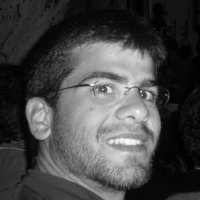

Head of Embedded Software and QA at GWF
Thessaloniki, GR · Lucerne, CH
Welcome! I am Theodoros Kyriakidis. I am born in Thessaloniki, Greece where I also currently reside. I have a MSc in Electrical Engineering from the Aristotle University and a PhD somewhere between Electronics, Computer Architecture and the Smart Grid from the École Polytechnique Fédérale de Lausanne (EPFL), in Lausanne, Switzerland. After four great years with Cisco Systems at Lausanne, and 11 years in my beloved Switzerland I am back in Thessaloniki (mostly 😃) and I head Embedded Software and QA at GWF.